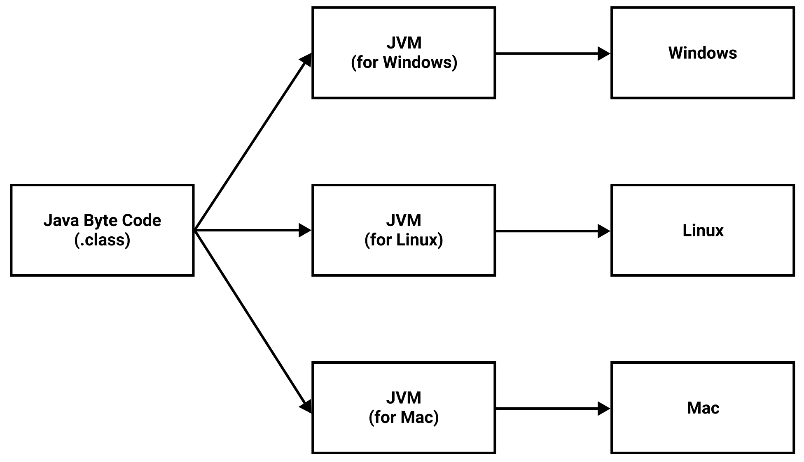
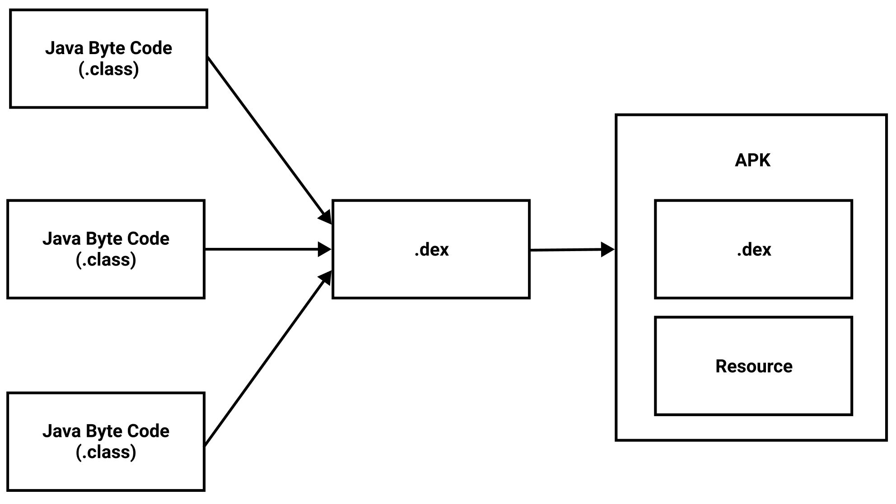

[Android] JVM, 달빅 가상머신, ART 차이점
JVM
JVM(Java Virtual Machine)은 Java 바이트코드를 실행하는 가상머신입니다.

Java Compiler는 Java 소스코드를 컴파일하여 Java 바이트코드를 생성합니다. JVM은 이 Java 바이트코드를 실행하는 주체입니다. 플랫폼에 적절한 JVM만 설치되면 어떤 플랫폼에서든 Java 바이트코드를 실행할 수 있습니다.
DVM
DEX 컴파일러는 Java 바이트코드를 DEX(Dalvik Executable)파일로 통합합니다.

DVM(Dalvik Virtual Machine)은 안드로이드 애플리캐이션을 실행하는 주체입니다. 정확하게 말하자면 DVM는 이 DEX 파일을 실행합니다.
구글은 자바 가상머신인 JVM을 사용할 수도 있었지만 오라클과의 라이센스 문제 때문에 DVM을 개발하여 안드로이드에 넣게 됩니다.
뿐만 아니라 모바일 기기는 베터리 수명, 컴퓨팅 능력, 메모리 등의 자원이 데스크탑 환경에 비해 열악합니다. 이 때문에 모바일 기기에 맞게 나온 가상머신이 바로 DVM 입니다.
DVM은 내부적으로 JIT(Just In Time) 컴파일러를 사용합니다. 이 컴파일러는 애플리캐이션을 실행할 때마다 자바 바이트코드를 기계어로 컴파일합니다. 이 덕분에 설치 파일은 작아졌으나 CPU, 메모리, 베터리 사용이 높아지게 되었습니다.
ART
ART(Android Runtime)은 안드로이드에서 사용되던 기존 DVM의 한계점을 해결하기 위해서 구글에서 새로 개발한 런타임입니다.
ART는 내부적으로 AOT(Ahead On Time) 컴파일러를 사용합니다. 이 컴파일러는 애플리캐이션을 설치할 때 자바 바이트코드를 기계어로 컴파일합니다. 따라서 설치 파일이 커지고 설치 시간이 오래 걸린다는 단점이 있으나 런타임에서 CPU, 메모리, 베터리 사용량이 낮아지고 퍼포먼스가 좋아지게 되었습니다.